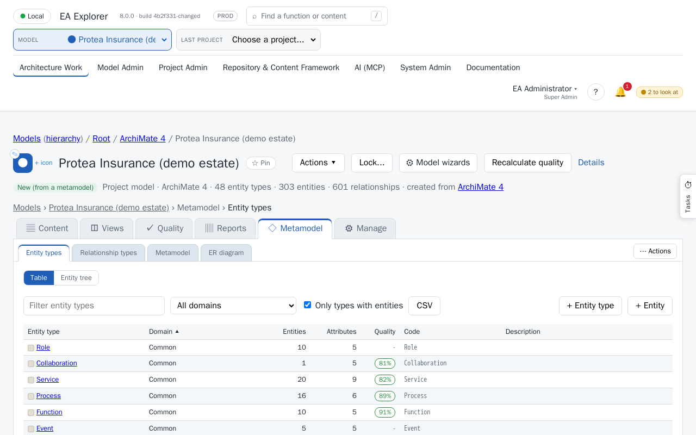

Add an entity type
For: Model Admin, Industry model makers
A new kind of element in a model's metamodel.

#/metamodel/{m}/typesWhy do this
An entity type is a kind of thing the model records: a capability, an application, a contract. A new type is needed when the organisation wants to answer questions about something the metamodel has no place for. Like any metamodel change it is reviewed before it applies. See Metamodels: the shape of a model.
A metamodel change ripples: into what people may record, what reports read, what rules check and what integrations send. That is why it goes through drafts and review, and why each version is kept and can be compared.
In TOGAF terms: The content framework and content metamodel: what building blocks and relationships the architecture may hold. See EA Explorer and the TOGAF Standard.
The goal: The metamodel can hold a new kind of thing.
Before you start You need the Model Admin role on the model.
Steps
- Open the model, Metamodel › Types.
- New: name, description, domain and icon.
- Add its attributes; Save. It is a draft until accepted.